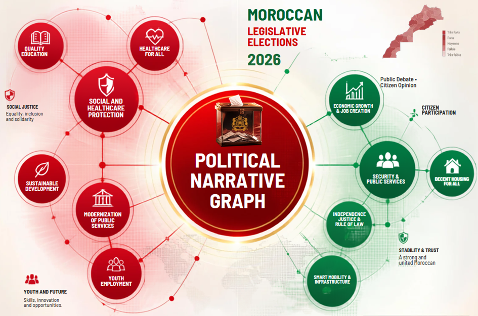

LA PREMIÈRE PLATEFORME MAROCAINE D’INTELLIGENCE POLITIQUE
Comprendre maintenant
Décider aujourd’hui
Anticiper demain
IBDN® (Indice Buildfluence de Dynamique Narrative) mesure en temps réel la présence, l’influence et la dynamique des partis et leaders politiques à partir des médias et des réseaux sociaux.
ϟExports consolidés3 périmètres documentés◎Base observée11 654 lignes analysées♢Lecture traçableSources, période et exclusions précisées

PRESSE MAROCAINE2 168
OPINION CITOYENNE6 988
PARTIS & LEADERS2 498
PÉRIODE D’ANALYSE29.07 - 05.08
LANGUES PRINCIPALESFR · AR
TOP SOURCES | INTERNATIONAL
VOLUME QUOTIDIEN | PRESSE MAROCAINE 29.07 - 05.08
Survolez la courbe pour afficher le volume du jour
SUJETS VALIDÉS | PRESSE MAROCAINE
88MENTIONS TAGUÉES
MENTIONS FORTES VALIDÉES LIENS SOURCES
Période : 3 au 5 août 2026Traçabilité. Données issues des exports Excel et tableaux de bord PDF transmis, du 29 juillet au 5 août 2026. Le total de 11 654 correspond aux lignes des trois corpus consolidés. Le graphe relationnel utilise 9 002 URL uniques après déduplication des recouvrements entre corpus et exclusion de Wikipédia et Wiktionary. Les mentions fortes proviennent des sélections « Favoris/Tags » et renvoient vers leur URL source. La portée est une estimation fournie par l’outil de veille.
L’IBDN® : UN INDICE, 8 DIMENSIONS, UNE VISION CLAIRE
SOURCES LES PLUS PRÉSENTES
Classement du monitoring web
Comparez les domaines par volume de mentions, influence de la source et portée estimée dans les exports du 4 août.
#ACTEUR / SOURCEMENTIONS OBSERVÉESMENTIONSINTENSITÉ RELATIVE · MENTIONS
OPINION CITOYENNE
Tonalité & canaux
Analyse de 6 988 mentions, hors Wikipédia et Wiktionary, du 30 juillet au 5 août 2026.
RÉPARTITION PAR CANAL
TONALITÉ DU DÉBAT 30.07 - 05.08
46,4%négatif
Négatif 46,4%Neutre 31,6%Positif 22,0%
Évolution quotidienne du volume, survol interactif
ANALYSE MÉDIAS
Sources internationales
Explorez les médias internationaux identifiés dans les rapports de veille.
INFLUENCE /100
PROFIL DE LA SOURCE
INDICATEURS NORMALISÉS
ÉLECTIONS LÉGISLATIVES | MAROC 2026
Political Narrative Graph
Cette cartographie relationnelle synthétise les interactions entre les partis, les personnalités politiques, les principaux narratifs politiques et les dynamiques de l’opinion publique. Elle offre une lecture globale des rapports de force et met en évidence les convergences, les oppositions et les influences qui structurent le débat politique.
Elle est calculée par cooccurrence dans 9 002 URL uniques. L’épaisseur des liens traduit leur fréquence ; leur couleur indique la tonalité dominante ou l’affiliation explicite.
9 002URL uniques retenues23nœuds documentés55relations pondérées
Pourquoi 9 002 et non 11 654 ? 11 654 est le total des lignes des trois corpus. Le graphe repose sur 9 002 URL uniques après déduplication des recouvrements et exclusion de Wikipédia et Wiktionary.
PARTIS POLITIQUESLEADERS POLITIQUESSUJETS DU DÉBAT POLITIQUEOPINION CITOYENNE
Total des cooccurrences affichées. Dans l’infobulle d’un nœud, ce total additionne les fréquences de toutes ses relations visibles. Il ne s’agit ni d’un score d’influence ni d’une intention de vote.
ARCHITECTURE DÉCISIONNELLE SOUVERAINE
PROCESSUS FONCTIONNEL TECHNOLOGIQUE
Veille et intelligence économiqueIntelligence artificielleBusiness IntelligenceAnalyse humaineContrôle qualité
SOURCES • VEILLE • INTELLIGENCE ÉCONOMIQUE
PRESSE ET MÉDIAS
Presse nationale et internationale, médias numériques et publications spécialisées.
RÉSEAUX SOCIAUX
Conversations publiques, contenus audiovisuels et signaux numériques accessibles.
INSTITUTIONS ET OPEN DATA
Sources institutionnelles, publications officielles et données ouvertes.
ÉTUDES, SONDAGES ET AUDIOVISUEL
Études publiques, enquêtes accessibles, rapports et contenus audiovisuels.
- FR • AR
- SOURCES PUBLIQUES
- COLLECTE CONTINUE 24H/7Aspiration et traitement continus des sources, seconde par seconde, 24 heures sur 24 et 7 jours sur 7.
- SOURCES PUBLIQUES ANALYSÉES
OSINT • DATA INTELLIGENCE
COLLECTEUR UNIQUE • CONSOLIDATION
PLATEFORME D’INTELLIGENCE POLITIQUE
De la donnée publique à l’intelligence décisionnelle
SOURCES • VEILLE • INTELLIGENCE ÉCONOMIQUE
- 01
OBSERVER
Collecter, agréger, normaliser et dédupliquer les données publiques.
- 02
COMPRENDRE
Qualifier les contenus par intelligence artificielle, veille et analyse augmentée.
IA • NLP • ANALYTICS • BI
- 03
ANALYSER
Identifier les narratifs, les acteurs, la tonalité, les tendances et les signaux émergents.
- 04
RELIER
Cartographier les cooccurrences, les écosystèmes d’acteurs et les relations documentées.
Une cooccurrence médiatique ne constitue pas à elle seule une alliance, une opposition ou une relation d’influence confirmée.
- 05
MESURER
Produire les indicateurs disponibles et préparer les dimensions de IBDN®
IBDN® non calculé tant que les données nécessaires aux huit dimensions ne sont pas complètes et validées.
CONTRÔLE QUALITÉ HUMAIN ET GOUVERNANCE
- 06
GARANTIR
Assurer la validation humaine, la traçabilité, l’éthique, la conformité et le contrôle qualité.
GOUVERNANCE HUMAINE CONTINUE
- Révision
- Validation
- Éthique
- Conformité
- Traçabilité
INTELLIGENCE ACTIONNABLE
HUB DE SORTIE • QUATRE PRODUITS
TABLEAUX DE BORD
Indicateurs validés, fraîcheur des données et synthèses opérationnelles.
Political Narrative Graph
Visualisation des narratifs et des cooccurrences documentées.
CARTOGRAPHIE DES ÉCOSYSTÈMES ET RAPPORTS DE FORCE
Relations documentées et hypothèses explicitement qualifiées.
RAPPORTS ET AIDE À LA DÉCISION
Notes d’analyse, alertes, rapports et éléments d’aide à la décision.
PUBLICS DESTINATAIRES
Décideurs • Institutions • Partis • Leaders politiques • Médias • Journalistes • Chercheurs • Analystes • Universités • Grandes écoles
LES 8 DIMENSIONS DE L’IBDN®
IBDN®•INDICE BUILDFLUENCE DE DYNAMIQUE NARRATIVE
Intelligence politique souveraine, explicable et contrôlée humainement.
Les huit dimensions décrivent le référentiel méthodologique. Le score IBDN® réel n’est affiché que lorsque toutes les données nécessaires sont disponibles et validées.
LECTURE RESPONSABLE
L’IBDN® décrit une présence et une dynamique dans le débat public. Il ne mesure jamais une intention de vote et ne constitue ni un sondage ni une prédiction électorale.
◉COMPRÉHENSIONUne lecture claire et factuelle du débat public.
◫TRANSPARENCEUne méthode sourcée et explicable.
↗ANTICIPATIONIdentifier les signaux faibles.
GOUVERNANCE ÉTHIQUE
Ce que l’indice mesure, et ce qu’il ne mesure pas.
Sources ouvertes, contrôle qualité humain, période d’observation affichée et limites explicitées. La balance de tonalité des leaders sera ajoutée dès réception de la requête dédiée, sans valeur provisoire inventée.
NOTRE MISSION
Rendre les dynamiques politiques lisibles, vérifiables et utiles.
Buildfluence conçoit une infrastructure marocaine souveraine d’intelligence stratégique. La plateforme transforme des données ouvertes en compréhension partagée, sans microciblage ni profilage des électeurs.
Indépendance
Une lecture factuelle, non partisane et méthodologiquement traçable.
Souveraineté
Une plateforme conçue au Maroc, au service de la compréhension du Maroc.
Responsabilité
Données ouvertes, conformité CNDP et RGPD, contrôle humain permanent.
« Les données racontent ce qui s’est passé. Les relations expliquent pourquoi. L’IBDN® révèle ce qui change. »Buildfluence Intelligence Politique®